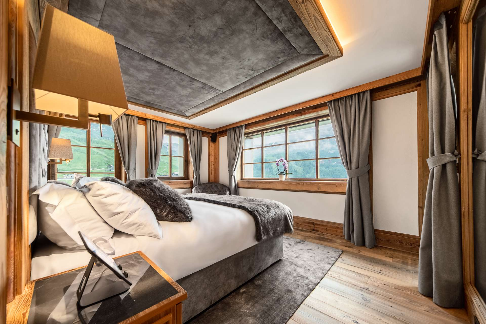
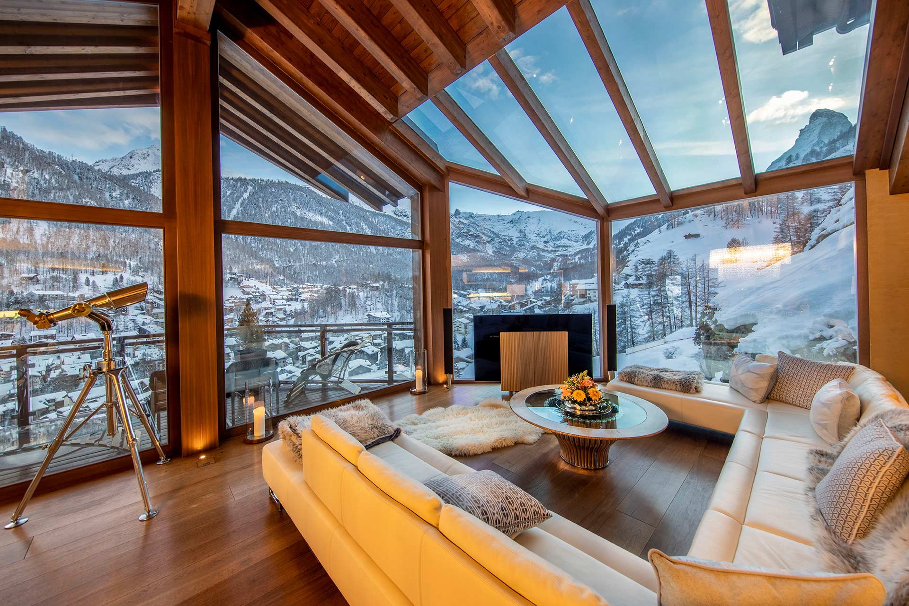
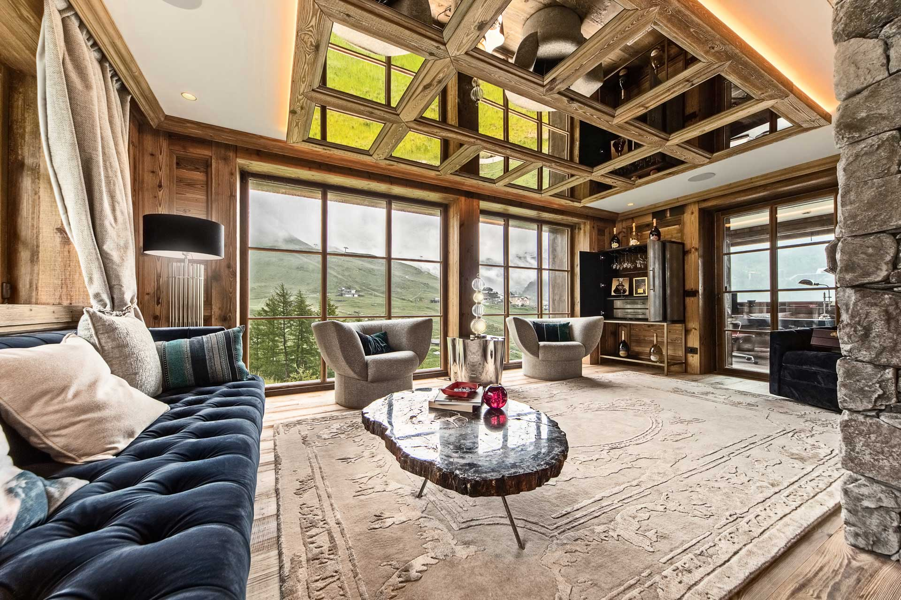
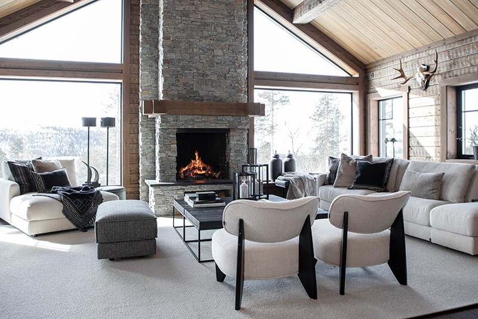
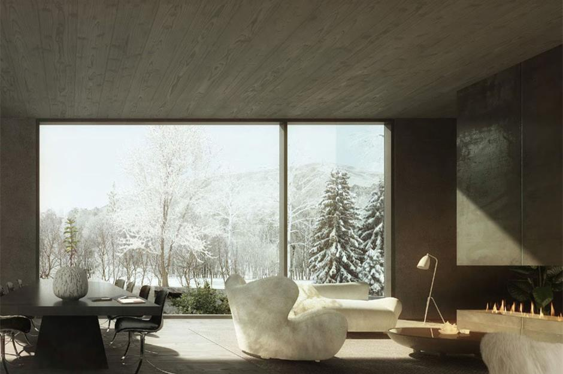
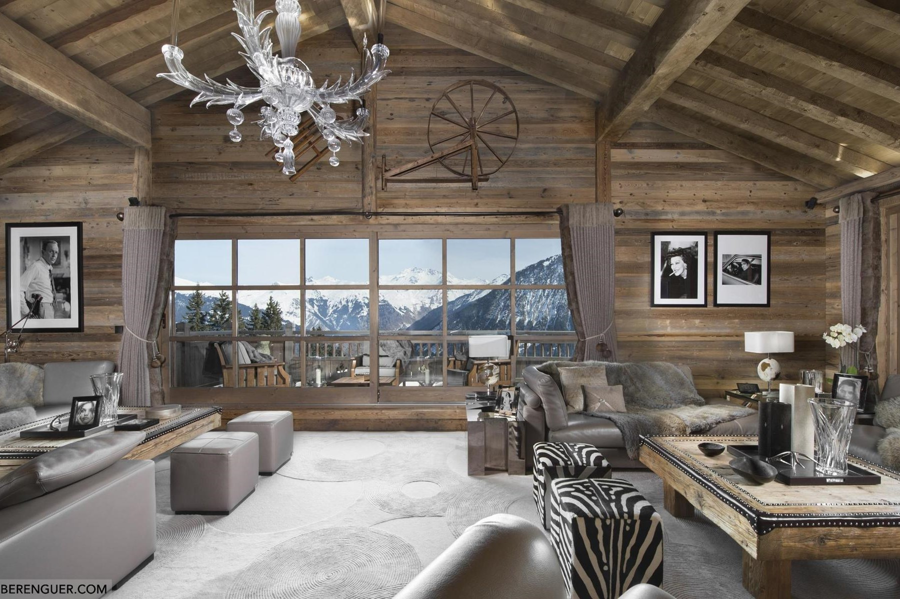

LIVING IN OKINA YAMA
Experience the ultimate in comfort and luxury with our range of accommodations, including stylish hotel rooms, cozy cabins and elegant villas, all located conveniently close to the slopes. Each accommodation is equipped with a range of amenities, ensuring that your stay is comfortable and enjoyable. We also offer personalized service to tailor your stay to your specific needs and preferences, making your experience with us truly exceptional. Contact us now for a custom quote and start planning your dream winter vacation.

Superior room
For an exceptional level of comfort, book one of our Superior rooms. You will have everything you need for a comfortable stay and a good night sleep.

Junior suite
For an extended stay or for extra space, choose one of our Junior suites featuring a separate living room.

Queen executive
The expansive Queen Executive includes everything you need for an extra comfortable and enjoyable stay.

Royal Cabin
Looking more like a castle than a cabin, The Royal Cabin will make you stay extraordinary.

President Lodge
Enjoy the spectacular mountain view from our President Lodge that includes a cedar hot tub and two fireplaces.

Grand Villa
Get ready for a stay that will blow your mind in our Grand Villa. The villa has spectacular views of the Okina Yama peaks from floor-to-ceiling windows and multiple decks.